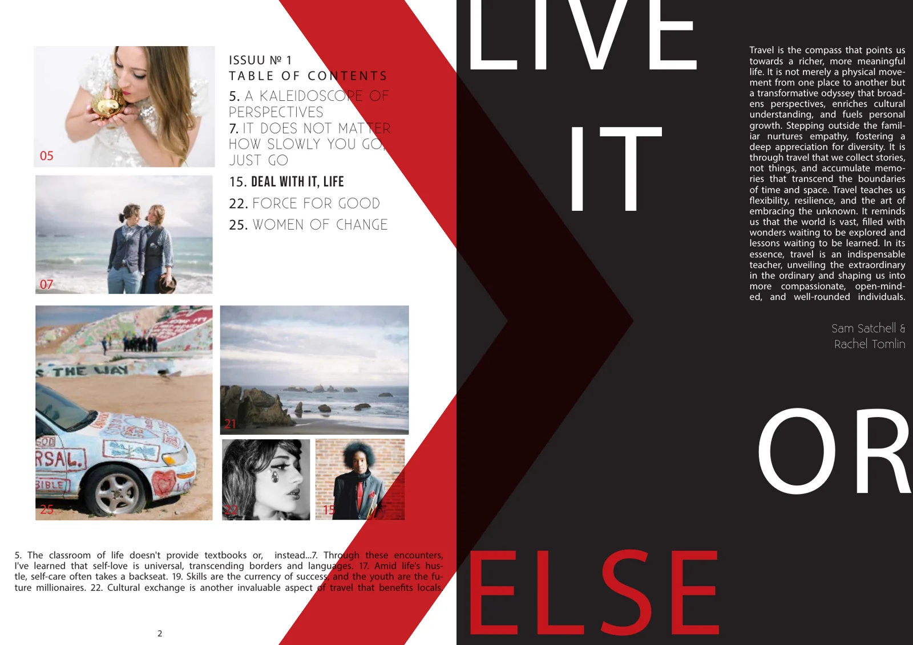
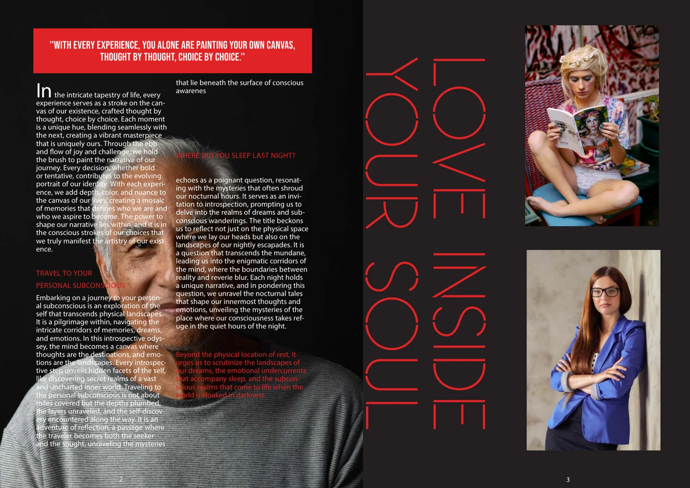
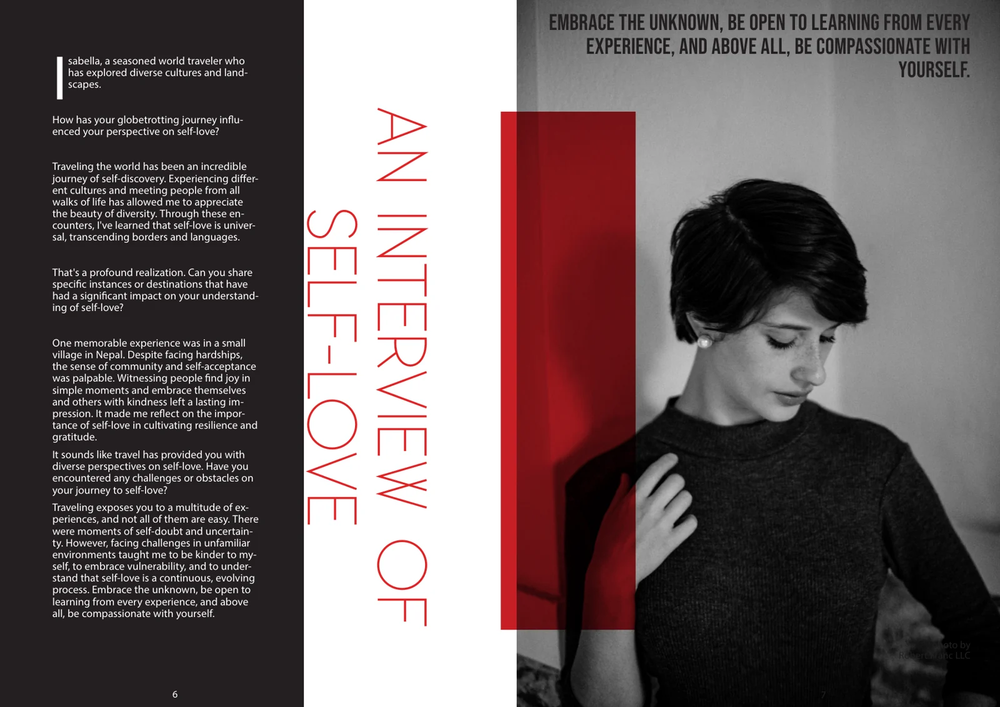
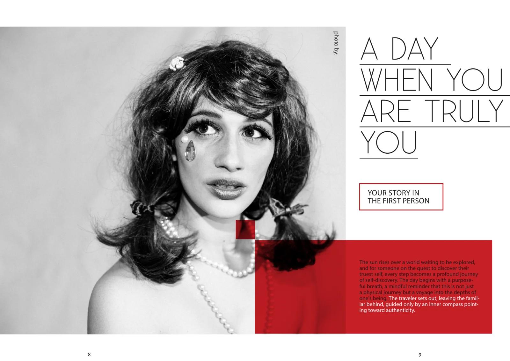
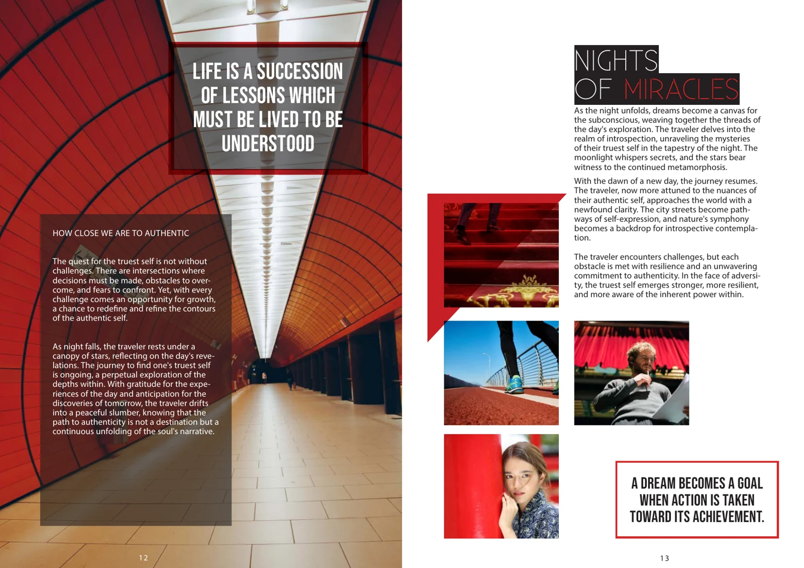

EDITORIAL DESIGN
WANDER
A visual rhythm for a world of stories.
Editorial identity · Publication layout · Typography · Visual storytelling
Cover and editorial identity · Multi-page layout system · Image and type hierarchy · Complete publication proof
 Enlarge image
Enlarge image
Enlarge image
Enlarge image
Enlarge image
Enlarge image
Enlarge imageThe context
WANDER explores the language of a travel and lifestyle publication: a recognizable cover, varied editorial pacing, and a visual system that supports long-form reading and image-led stories.
My contribution
I developed the publication’s visual identity and layouts, combining typography, composition, image selection, and narrative pacing. The selected pages show how a consistent graphic vocabulary can produce distinct stories without making every spread feel the same.
Making the work useful
The supplied publication is a design proof. The portfolio presents selected pages alongside the complete proof so the sequencing and consistency can be reviewed as a whole.
Editorial design proof. The featured contribution is publication design; images included within the supplied proof are not all presented as original photography.